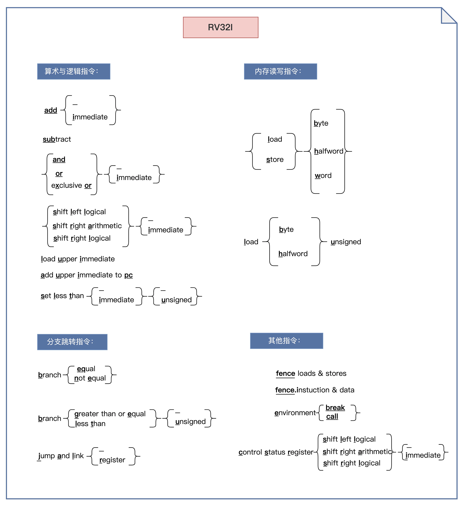
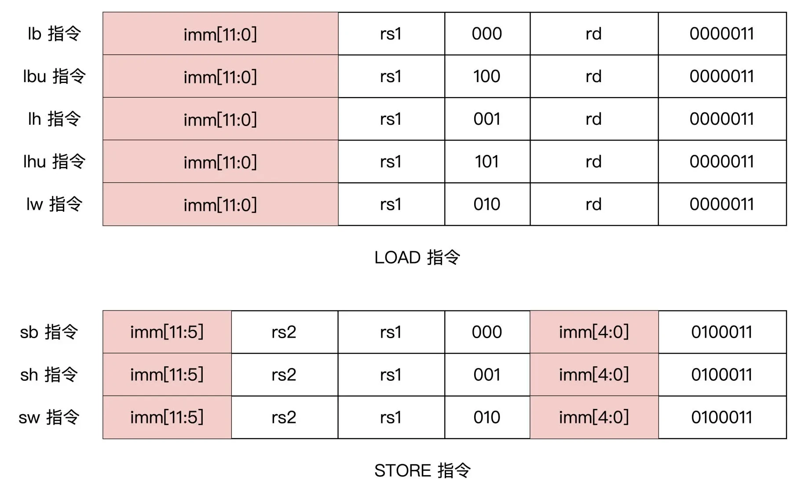
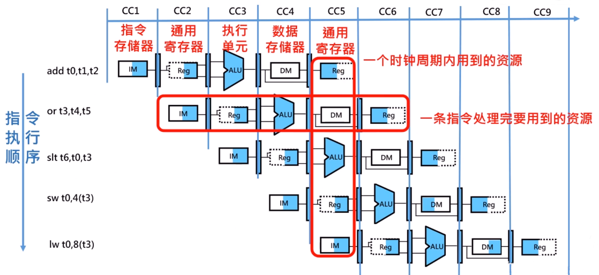
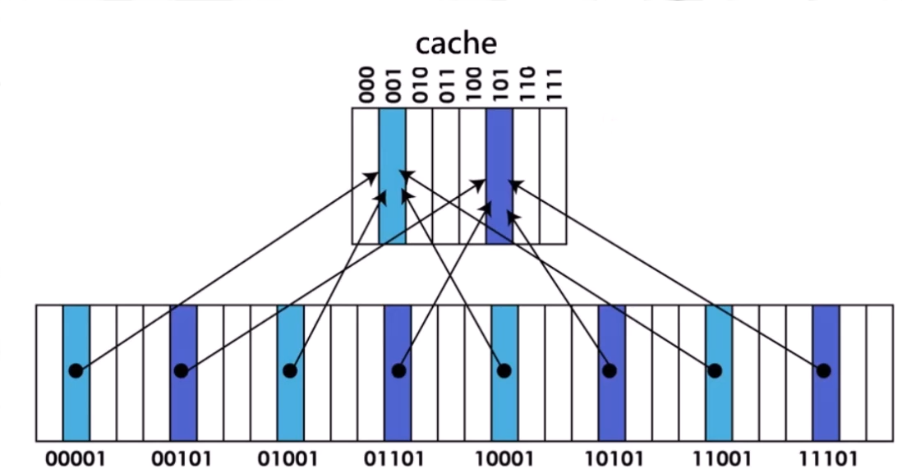
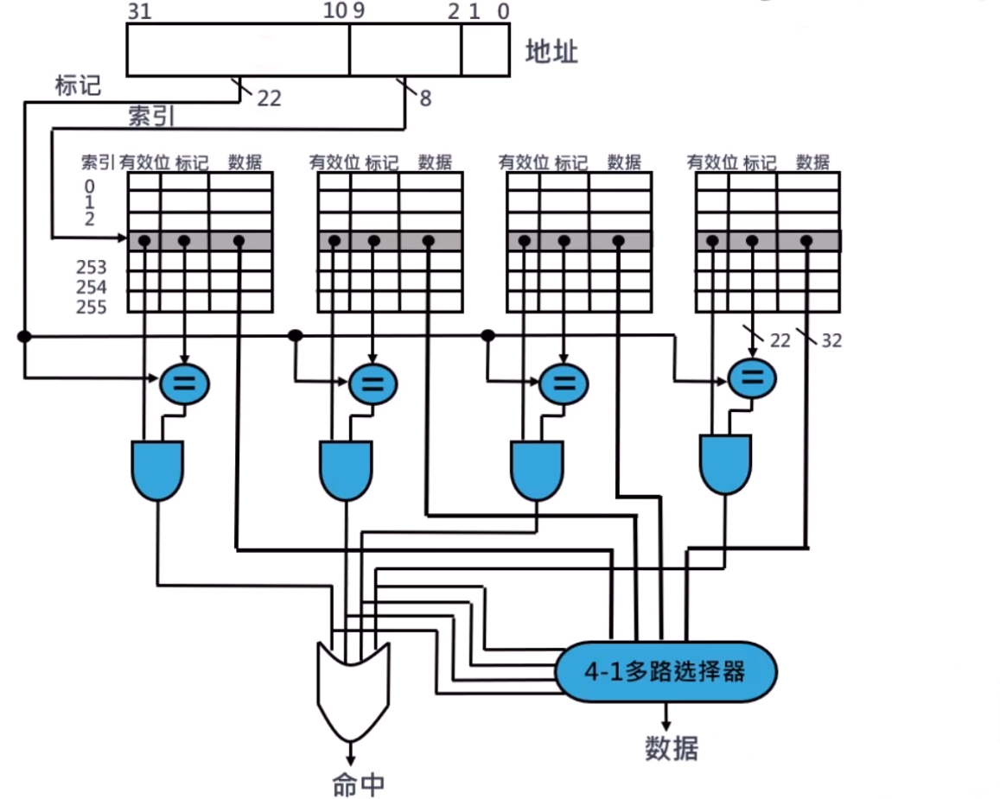

RISC-V 基础
单核 CPU 组成结构

数据通路是处理器中执行处理器所需操作的硬件部分，就像是处理器的四肢。
控制器是对数据通路要做什么操作进行行为调度的硬件结构，就像是处理器的大脑。

指令集划分
| 名称 | 类别 | 说明 |
|---|---|---|
| RV32I | 基础指令 | 整数指令，包含算术、分支、逻辑、访存指令，有32个32位寄存器，能寻址32位地址空间 |
| RV32E | 基础指令 | 与RV32I一样，只不过只能使用前16个32位寄存器 |
| RV64I | 基础指令 | 整数指令，包含算术、分支、逻辑、访存指令，有32个64位寄存器，能寻址64位地址空间 |
| RV128I | 基础指令 | 整数指令，包含算术、分支、逻辑、访存指令，有32个128位寄存器，能寻址128位地址空间 |
| M | 扩展指令 | 包含乘法、除法、求模取余指令 |
| F | 扩展指令 | 单精度(32bit)浮点指令 |
| D | 扩展指令 | 双精度(32bit)浮点指令,必须要同时支持F扩展指令 |
| Q | 扩展指令 | 四倍精度浮点指令 |
| A | 扩展指令 | 存储器原子操作指令，比如比较并交换，读-改-写等指令 |
| C | 扩展指令 | 压缩指令,指令长度为16位，主要用于改善程序大小 |
| P | 扩展指令 | 单指令多数据（Packed-SIMD)指令 |
| B | 扩展指令 | 位操作指令 |
| H | 扩展指令 | 支持 Hypervisor 管理指令 |
| J | 扩展指令 | 动态翻译语言的指令 |
| L | 扩展指令 | 十进制浮点指令 |
| N | 扩展指令 | 用户中断指令 |
| G | 通用指令 | 包含 I、M、A、F、D指令 |
RV32I 基础指令集

RV32I 通用寄存器
| 寄存器 | ABI 名字 | 描述 | Saver |
|---|---|---|---|
| x0 | zero | 0值寄存器，硬编码为0,写入数据忽略，读取永远为0 | - |
| x1 | ra | 返回地址 | Caller |
| x2 | sp | 栈指针 | Callee |
| x3 | gp | 全局指针 | - |
| x4 | tp | 线程指针 | - |
| x5 | t0 | 临时寄存器或者备用的链接寄存器 | Caller |
| x6-x7 | t1-t2 | 临时寄存器 | Caller |
| x8 | s0/fp | 需要保存的寄存器或者帧指针寄存器 | Callee |
| x9 | s1 | 需要保存的寄存器，保存原进程中的关键数据，避免在函数调用过程中被破坏 | Callee |
| x10-x11 | a0-a1 | 函数参数/返回值 | Caller |
| x12-x17 | a2-a7 | 函数参数 | Caller |
| x18-x27 | s2-s11 | 需要保存的寄存器 | Callee |
| x28-x31 | t3-t6 | 临时寄存器 | Caller |
函数调用时保留的寄存器
被调用函数一般不会使用这些寄存器，即便使用也会提前保存好原值，可以信任。这些寄存器有：sp, gp, tp 和 s0-s11 寄存器。
函数调用时不保存的寄存器
有可能被调用函数使用更改，需要caller在调用前对自己用到的寄存器进行保存。这些寄存器有：参数与返回地址寄存器 a0-a7，返回地址寄存器 ra，临时寄存器 t0-t6
RV32I 基础指令格式

- 源寄存器和目标寄存器都设计固定在所有 RISC-V 指令同样的位置上，指令译码相对简单，所以指令在 CPU 流水线中执行时，可以先开始访问寄存器，然后再完成指令解码。
- 所有立即数的符号位总是在指令的最高位。这么做的好处是，有可能成为关键路径的立即数符号扩展可以在指令解码前进行，有利于 CPU 流水线的时序优化。
寄存器-寄存器的算术指令

指令汇编格式
加法
add rd, rs1, rs2
减法
sub rd, rs1, rs2
逻辑与
and rd, rs1, rs2
逻辑或
or rd, rs1, rs2
逻辑异或
xor rd, rs1, rs2
有符号小于比较
slt rd, rs1, rs2
无符号小于比较
sltu rd, rs1, rs2
逻辑左移
sll rd, rs1, rs2
逻辑右移
srl rd, rs1, rs2
算数右移
sra rd, rs1, rs2
立即数的算术指令

注意，在立即数算术指令中，没有减法运算。
指令汇编格式
立即数加法
addi rd, rs1, imm[11:0]
立即数逻辑与
andi rd, rs1, imm[11:0]
立即数逻辑或
ori rd, rs1, imm[11:0]
立即数逻辑异或
xori rd, rs1, imm[11:0]
立即数有符号小于比较
slti rd, rs1, imm[11:0]
立即数无符号小于比较
sltiu rd, rs1, imm[11:0]
立即数逻辑左移
slli rd, rs1, shamt[4:0]
立即数逻辑右移
srli rd, rs1, shamt[4:0]
立即数算数右移
srai rd, rs1, shamt[4:0]
Load/Store 指令

Load 和 Store 的寻址模式只能是符号扩展 12 位的立即数，加上基地址寄存器得到访问的存储器地址。因为没有了复杂的内存寻址方式，这让 CPU 流水线可以对数据冲突提前做出判断，并通过流水线各级之间的转送加以处理，而不需要插入空操作（NOP），极大提高了代码的执行效率。
注意，Load指令属于 I 型指令，而 Store 指令属于 S 型指令。
指令汇编格式
字加载
lw rd, offset[11:0](rs1)
半字加载
lh rd, offset[11:0](rs1)
无符号半字加载
lhu rd, offset[11:0](rs1)
字节加载
lb rd, offset[11:0](rs1)
无符号字节加载
lbu rd, offset[11:0](rs1)
字存储
sw rs2, offset[11:0](rs1)
半字存储
sh rs2, offset[11:0](rs1)
字节存储
sb rs2, offset[11:0](rs1)
有条件分支跳转指令

指令汇编格式
相等跳转
beq rs1, rs2, label
不等跳转
bne rs1, rs2, label
小于跳转
blt rs1, rs2, label
无符号小于跳转
bltu rs1, rs2, label
大于等于跳转
bge rs1, rs2, label
无符号大于等于跳转
bgeu rs1, rs2, label
无条件跳转指令
注意，直接跳转是 J 型指令，而相对跳转是 I 型指令。
直接跳转指令
JAL 指令的执行过程：
- 首先，把 20 位的立即数做符号扩展，并左移一位，产生一个 32 位的符号数
- 然后，将该 32 位符号数和 PC 相加来产生目标地址（这样 JAL 可以作为短跳转指令，跳转至 PC±1MB 的地址范围内）
- 同时，JAL 会把紧随其后的那条指令的地址，存入目标寄存器中。这样，如果目标寄存器是0,则 JAL 就等同于 goto 指令；如果目标寄存器不为零，JAL 可以实现函数调用的功能
相对跳转指令

JALR 指令会把 12 位立即数和源寄存器相加，并把相加的结果末位清零，作为新的跳转地址。和 JAL 指令一样，JALR 也会把紧随其后的那条指令的地址，存入目标寄存器中。
指令汇编格式
无条件直接跳转
jal rd, label # 将 PC+4 的值保存到 rd 寄存器中，然后设置 PC = PC + offset
伪指令 j 实际上就是jal指令的变体，此时 rd 会被设置为 x0,表示丢弃返回地址
无条件相对跳转
jalr rd, rs1, imm # 将 PC+4 保存到 rd 寄存器中，然后设置 PC = rs1 + imm
跳转到任意 32 位绝对地址处
lui x1, <hi20bits>
jalr ra, x1, <lo12bits>
相对PC地址32位偏移量的相对跳转
auipc x1, <hi20bits>
jalr x0, x1, <lo12bits>
U(Upper immediate)型指令

指令汇编格式
lui 指令 (Load Upper Immediate)
lui rd, imm # 将 20 位的立即数左移12位，低 12 位补零，并写回寄存器 rd 中
配合 addi 指令（设置低 12 比特）可实现讲寄存器设置为任意 32 比特的立即数，例如：
lui x10, 0x87654 # x10 = 0x87654000
addi x10, x10, 0x321 # x10 = 0x87654321
但是，当这个 12 位的立即数为负数（即最高比特位是1）时，得到的结果是高 20 位减 1 再和低 12 位拼接，比如：
lui x10, 0xDEADB # x10 = 0xDEADB000
addi x10, x10, 0xEEF # x10 = 0xDEADBEEF
解决这个问题的一种方法是，如果低 12 位的立即数的符号位是 1 ,那就预先给高 20 位的数加 1。li 伪指令可以替我们处理好这种特殊情况。
auipc 指令 (Add Upper Immediate to PC)
auipc rd, imm # 将 20 位的立即数左移12位，低 12 位补零，将得到的 32 位数与 pc 的值相加，最后写回寄存器 rd 中
具体应用有：
Label: auipc x10, 0 # 将 Label 的地址保存在 x10 寄存器中
CSR 寄存器指令
除了内存地址空间和通用寄存器地址空间外，RISC-V 中还定义了一个独立的控制与状态寄存器（CSR）地址空间。
独立的 12 位地址编码空间

专用的 CSR 指令

其他指令
- 系统调用
ecall指令 - 调试时用于将控制转移到调试环境的
ebreak指令
ALU 的设计

加法运算的实现
module adder #(
parameter N = 8
) (
input [N - 1 : 0] a,
input [N - 1 : 0] b,
input cin,
output [N - 1 : 0] sum,
output cout
);
assign {cout, sum} = a + b + cin;
endmodule
减法运算的实现
module subtractor #(
parameter N = 8
) (
input [N - 1 : 0] a,
input [N - 1 : 0] b,
output [N - 1 : 0] y
);
assign y = a - b;
endmodule
比较运算的实现
相等比较
用异或门检查 A 和 B 中对应的位是否相等
量值比较（减法）
首先计算A-B的值，然后检查结果的符号位
module comparator #(
parameter N = 8
) (
input [N - 1 : 0] a,
input [N - 1 : 0] b
output eq,
output neq,
output lt,
output lte,
output gt,
output gte
);
assign eq = (a == b);
assign neq = (a != b);
assign lt = (a < b);
assign lte = (a <= b);
assign gt = (a > b);
assign gte = (a >= b);
endmodule
单指令周期 CPU
- 指令周期：CPU 取出并执行一条指令所需的全部时间
- 指令执行的的五个步骤
- 取指（Instruction Fetch）
- 译码（Instruction Decode）
- 执行（Execute）
- 访存（Memory Access）
- 写回（Write Back)
- CPU周期：也称为机器周期，一个机器周期由若干个时钟周期组成
- CPI (Clock Cycle Per Instruction)：执行每条指令所需的时钟周期数的平均值
- 单指令周期CPU：全部指令选用一个 CPU 周期完成的系统

寄存器堆的实现

module regfile(rna, rnb, d, wn, we, clk, clrn, qa, qb);
input [4:0] rna, rnb, wn; // 读地址，写地址
input [31:0] d; // 写数据
input we, clk, clrn; // 写使能，时钟，清除信号
output [31:0] qa, qb; // 读数据
reg [31:0] register [1:31]; // 31x32-bit regs
// 2 read ports
assign qa = (rna == 0) ? 0 : register[rna];
assign qb = (rnb == 0) ? 0 : register[rnb];
// 1 write port
always @(posedge clk or negedge clrn)
if(clrn == 0) begin
integer i;
for(i=1;i<32;i=i+1)
register[i] <= 0;
end else if ((wn != 0) && we)
register[wn] <= d;
endmodule
完整的数据通路

- 译码阶段，会将指令的功能码和操作码发送给控制器，来产生相应的控制信号
- 立即数扩展信号：ImmSel
- ALU 功能选择信号：ALUSel
控制器的设计

R 型指令数据通路

ALUSel会根据指令的funct3来取不同的值
I 型指令数据通路

Load 指令数据通路

Store 指令数据通路

- 立即数来自
inst[31:25][11:7]，这个和Load不同 - Store指令没有写回阶段
B 型指令数据通路

- 无访存和写回阶段
jalr 指令数据通路

- PC+4 的值会保存到
rd中
jal 指令数据通路

流水线技术

处理器性能公式
$$ ProgramTime = \frac{Instructions}{Program} * \frac{Cycle s}{Instruction} * \frac{Time}{Cycle} $$
流水线阶段寄存器
为了确保硬件共享的时候，前一阶段的数据不被丢失，需要在流水线之间插入“阶段寄存器”来保存中间值和控制信号。

Cache

Cache 的结构

- 块（block）：两级存储器层次结构中存储器信息交换的最小单元
- 命中（hit）：如果处理器需要的数据存放在高层存储器中的某个块中，称为一次命中
- 缺失（miss）：如果在高层存储器中没有找到所需的数据，这次数据请求称为一次缺失
- 缺失代价（miss penalty）：将相应的块从底层存储器替换到高层存储器的时间+将该信息块传送给处理器的时间
Cache 直接映射
直接映射：一种 cache 结构，其中每个存储器地址仅仅对应到 cache 中的一个位置
映射方法：（块地址）mod（cache 中的块数）
标记：表中的一个字段，包含了地址信息，这些地址信息可以用来判断cache中的字是否就是所请求的字
有效位：表中的一个字段，用来标识一个块是否包含有一个有效数据


缺点：利用率低，命中率低
Cache 全相联映射
全相联映射：一个块可以被放置在 cache 中的任何位置


缺点：硬件开销大（有多少cache块就配有相等数量的比较器）
Cache 组相联映射
在组相联映射中，每个块可被放置的位置数是固定的，每个块有 n 个位置可放的 cache 被称为 n 路组相联 Cache


四路组相联 Cache：
- 4 个比较器
- 1 个四选一多路选择器
Cache 的设计
- 要考虑的维度
- Cache 的容量
- 块大小
- 组织方式（Direct，Fully Associative，Set Associative）
- 替换算法（FIFO，LRU）
- 写策略（write-through, write-back）
虚拟地址

分段管理

分段管理：将一个程序按照逻辑单元分成多个程序段，每一个段使用自己单独的虚拟地址空间。
- 逻辑上相互独立
- 容易实现共享和保护
- 非常容易产生碎片（段长是不确定的）
分页管理

- 如果页表项为4字节，那么整张页表会占据4MB大小的内存空间
两级分页管理

- 4KB的页目录+4KB的页表
快速地址转换 TLB

块表（Translation-Lookaside Buffer）：用于记录最近使用地址的映射信息的高速缓存，从而可以避免每次都要访问页表
使用 TLB 进行地址转换


特权级别
一个 RISC-V 的硬件线程在任一时刻只能运行在某一个特权级上，这个特权级由 CSR 指定和配置。
| 名称 | 级别 | 缩写 | 编码 | 说明 |
|---|---|---|---|---|
| 用户应用程序特权级 | 0 | U | 00 | 运行应用程序，同样也适用于嵌入式系统 |
| 管理员特权级 | 1 | S | 01 | 主要用于支持现代操作系统，如Linux |
| 虚拟机监视特权级 | 2 | H | 10 | 支持虚拟机监视器 |
| 机器特权级 | 3 | M | 11 | 对内存、I/O和一些必要的底层功能（启动和系统配置）有着完全的控制权 |
标准寄存器列表
Machine Mode
| 名称 | 地址 | 属性 | 备注 |
|---|---|---|---|
| mvendorid | 0xF11 | RO | 商业供应商编号寄存器 |
| marchid | 0xF12 | RO | 架构编号寄存器 |
| mimpid | 0xF13 | RO | 硬件实现编号寄存器 |
| mhartid | 0xF14 | RO | Hart编号寄存器 (Hart: Hardware Thread) |
| mstatus | 0x300 | RW | 异常处理状态寄存器 |
| misa | 0x301 | RO | 指令集架构寄存器 |
| mie | 0x304 | RW | 局部中断屏蔽控制寄存器 |
| mtvec | 0x305 | RW | 异常入口基地址寄存器 |
| mtvt | 0x307 | RW | 中断向量表的基地址，至少为 64byte 对齐 |
| mscratch | 0x340 | RW | 暂存寄存器，比如进入异常处理模式后，将应用程序的用户的 sp 寄存器临时保存到这个寄存器中 |
| mepc | 0x341 | RW | 异常PC寄存器 |
| mcause | 0x342 | RW | 异常原因寄存器 |
| mtval | 0x343 | RW | 异常值寄存器，保存进入异常之前出错指令的编码值或者存储器访问的地址值 |
| mip | 0x344 | RW | 中断等待寄存器 |
| mnxti | 0x345 | RW | 读操作返回值是下一个中断的handler地址，写回操作会更新中断使能的状态 |
| mintstatus | 0x346 | RO | 用于保存当前中断 Level |
| mscratchcsw | 0x348 | RW | 用于在特权模式变化时交换mscratch与目的寄存器的值 |
| mscratchcswl | 0x349 | RW | 用于在中断Level变化时交换mscratch与目的寄存器的值 |
| mcycle | 0xB00 | RW | 周期计数器的低32位 |
| mcycleh | 0xB80 | RW | 周期计数器的高32位 |
| minstret | 0xB02 | RW | 完成指令计数器的低32位，该寄存器用于衡量处理器的性能 |
| minstrech | 0xB82 | RW | 完成指令计数器的高32位 |
User Mode
| 名称 | 地址 | 属性 | 备注 |
|---|---|---|---|
| cycle | 0xC00 | RO | mcycle寄存器的只读副本 |
| time | 0xC01 | RO | mtime寄存器的只读副本 |
| instret | 0xC02 | RO | minstret寄存器的只读副本 |
| cycleh | 0xC80 | RO | mcycleh寄存器的只读副本 |
| timeh | 0xC81 | RO | mtimeh寄存器的只读副本 |
| instreth | 0xC82 | RO | minstreth寄存器的只读副本 |
RISC-V 的中断


中断和异常相关的寄存器


mstatus
- MIE：为1表示中断的全局开关打开，中断能够被正常响应
- FS：维护浮点单元的状态。上电默认为0,表示Off，为了能够正常使用浮点单元，软件需要使用 CSR 写指令将 FS 的值改写为非 0 值以打开浮点单元的功能。操作系统在进行上下文切换的时候，需要通过该值来判断是否需要对浮点单元进行上下文的保存
- XS：维护用户自定义的扩展指令单元状态，类似与 FS
mtvec

异常代码

中断返回

中断屏蔽与中断等待

中断优先级

单指令数据通路的中断响应与退出

RISC-V 架构的可扩展性
指令集的扩展

指令编码空间的扩展

- custom-0、custom-1用于 RV32 的自定义指令集扩展
- custom-2、custom-3预留给 RV128，也可以用于 RV32、RV64的用户自定义指令集扩展
常用伪指令
赋值指令
mv rd, rs # 等效于 addi rd, rs, x0
加载立即数
li rd, 13 # 等效于 addi rd, x0, 13
函数调用和返回
jal my_foo # 函数调用
ret # 函数返回，等效于 jr ra，等效于 jalr x0, ra, 0